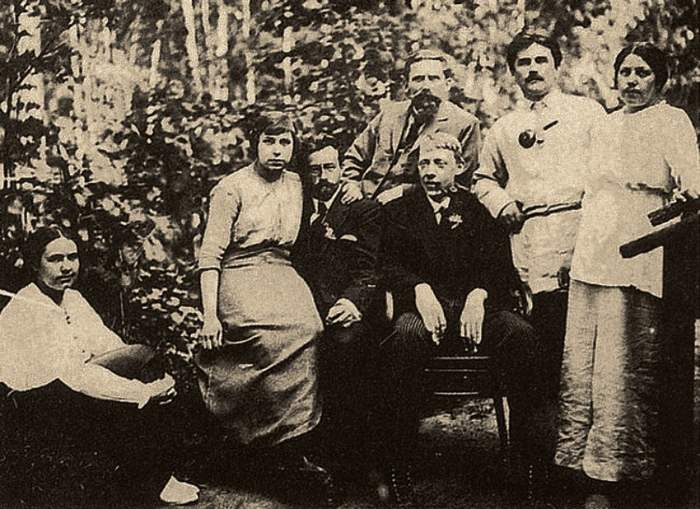
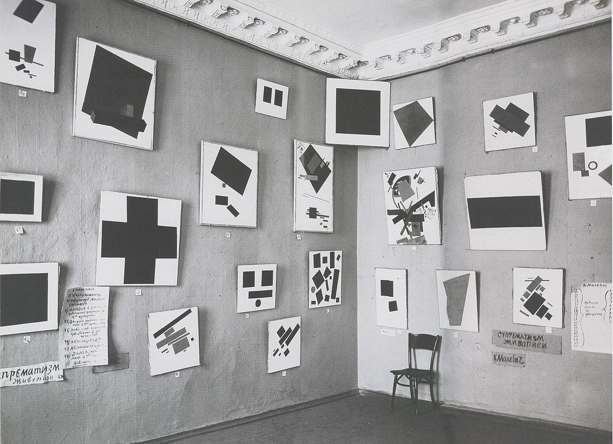
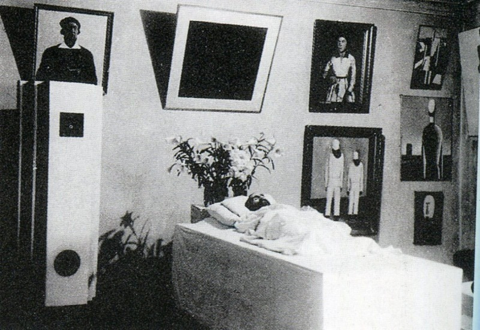

Kazimir Severínovich Malévich (1879–1935)
Kazimir Severinovich Malevich nació el 23 de febrero de 1879 en Kiev, en el seno de una familia polaca de clase trabajadora. Desde muy joven mostró un interés profundo por el dibujo y la pintura, a pesar de no haber tenido acceso inmediato a una formación artística formal. Su infancia transcurrió entre los paisajes rurales de Ucrania, cuyas geometrías simples y horizontes planos dejarían una huella visual duradera en su obra.
Formación y primeros años
En 1896 se trasladó a Moscú, donde comenzó sus estudios en la Escuela de Pintura, Escultura y Arquitectura. Allí conoció las corrientes vanguardistas que circulaban por Europa, como el impresionismo, el simbolismo y el cubismo. Sus primeras obras reflejan la influencia de Cézanne y de los fauvistas franceses, pero pronto Malevich buscó una vía más radical, orientada a la abstracción.
La vanguardia rusa
Entre 1910 y 1915, Malevich se integró en los círculos artísticos más experimentales de Rusia, como el grupo Supremus y las exposiciones 0.10. En este período desarrolló el concepto de Suprematismo, una forma de arte basada en la supremacía de la sensibilidad pura sobre la representación del objeto. Su famosa obra Cuadrado negro (1915) fue presentada como el punto final de la pintura tradicional y el inicio de una nueva era espiritual en el arte.
Durante la Revolución Rusa
Tras la Revolución de 1917, Malevich participó activamente en el desarrollo de una cultura visual revolucionaria. Fue profesor en la escuela de arte de Vítebsk junto a Marc Chagall y El Lissitzky, impulsando una pedagogía centrada en la experimentación formal y la autonomía estética. Sin embargo, con el ascenso del realismo socialista en la década de 1930, su arte fue censurado por las autoridades soviéticas.
Últimos años y legado
Malevich murió en 1935 en Leningrado. Su legado, sin embargo, trascendió las fronteras de Rusia e influyó profundamente en el arte abstracto, el diseño gráfico, la arquitectura y el pensamiento visual del siglo XX. Hoy su obra se considera un pilar de la modernidad, un puente entre el arte y la filosofía de la forma.
